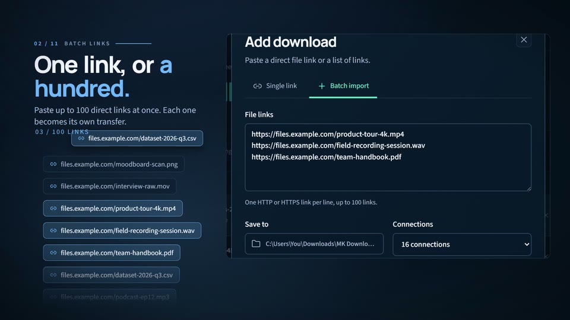
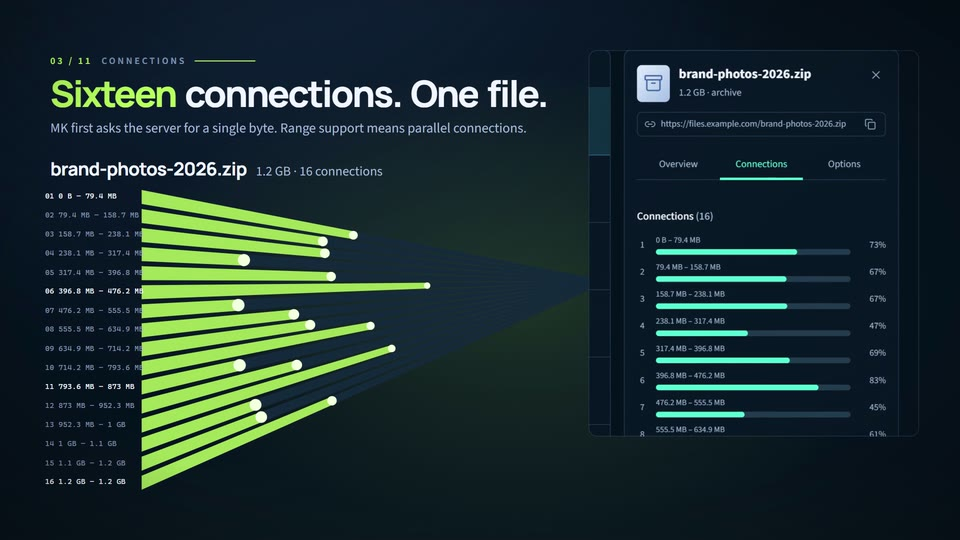
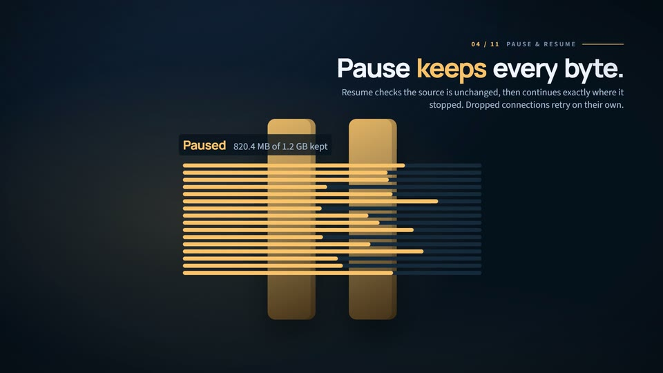
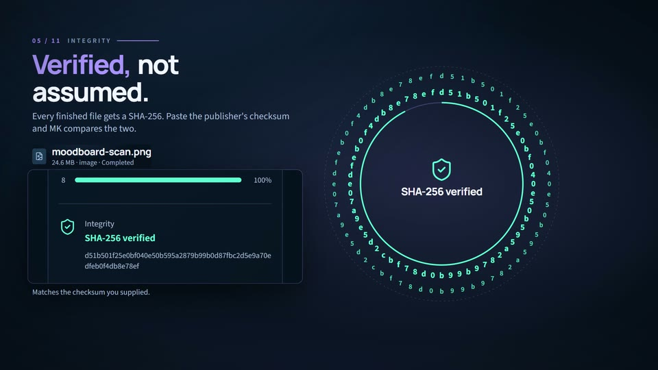
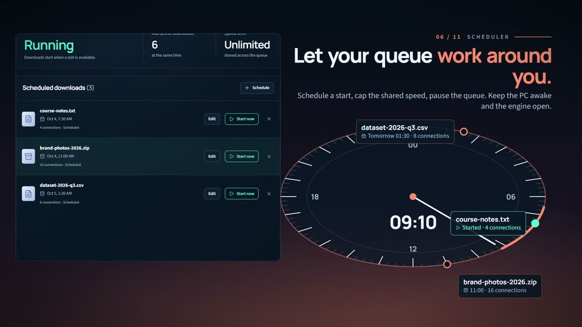
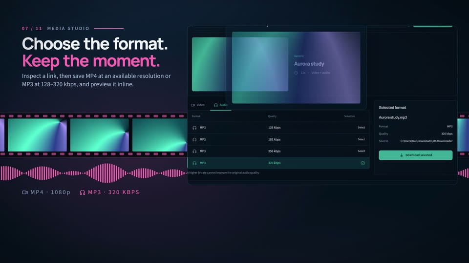
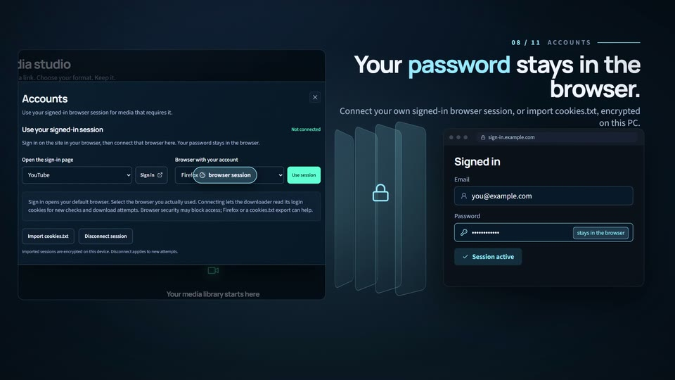
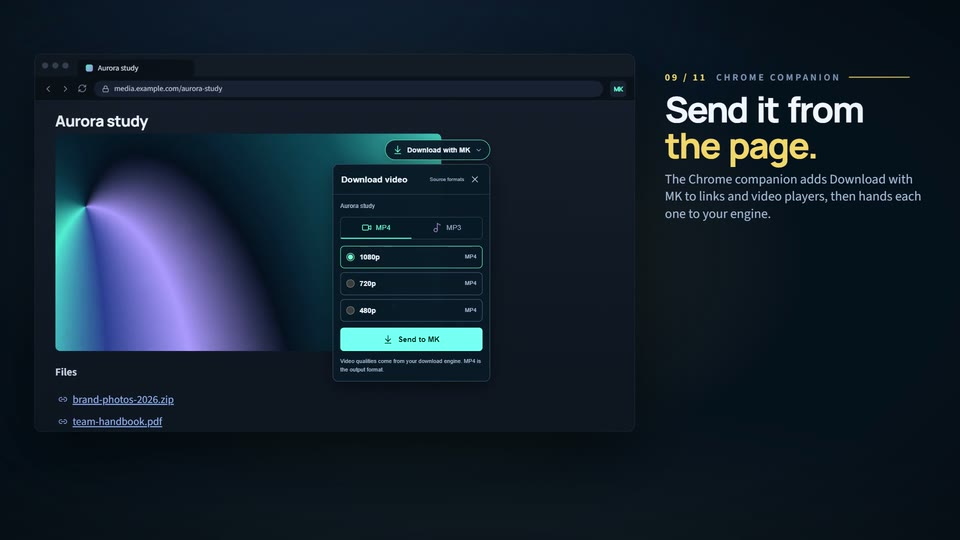
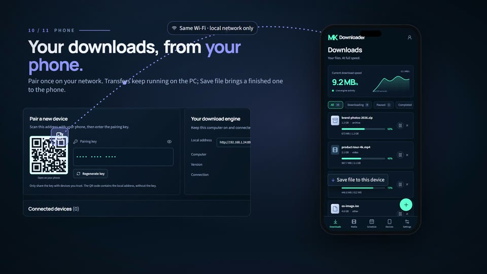
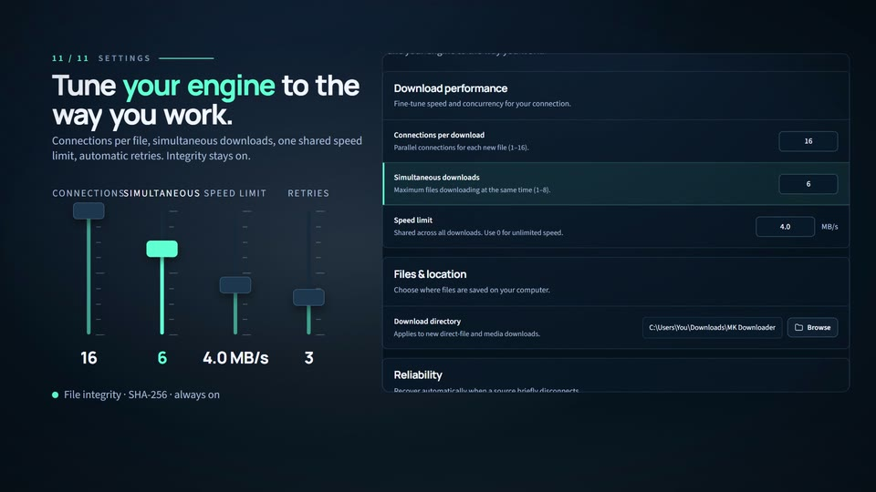

Your files. At full speed.
One workspace shows live speed, active transfers and time left for every download.
One workspace shows live speed, active transfers and time left for every download.
A 135-second tour of MK Downloader 2.0.1: 16-connection transfers, batch links, resume, SHA-256 checks, scheduling, an MP4/MP3 media studio, signed-in sessions, the Chrome companion and phone pairing, rebuilt from the real navy and mint interface.
One workspace shows live speed, active transfers and time left for every download.

Paste up to 100 direct links at once; each one becomes its own transfer.

MK checks the server's byte-range support, then splits one file across up to 16 connections.

Partial data stays on disk, resume checks the source first, and dropped connections retry on their own.

Every finished file gets a SHA-256, compared with the checksum you supply.

Schedule starts, share one speed cap and pause the queue while the PC stays awake.

Inspect a link, save MP4 at an available resolution or MP3 up to 320 kbps, then preview it.

Use your own signed-in browser session, or import cookies.txt, encrypted on this PC.

The Chrome companion adds Download with MK to links and video players, then hands off to your engine.

Pair a phone on your network; downloads run on the PC and finished files can be saved to the phone.

Set connections, simultaneous downloads, a shared speed limit and retries; integrity stays on.